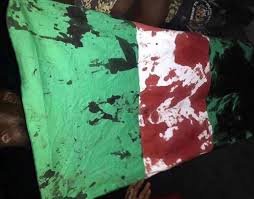

On the 20th of October 2020, nigerian youths gathered to protest the increase of toll gate prices, and rather than help their younger generation, the government profiled them and sent SARS officials to brutally attack them. At the time and till this day, the date is remembered as #ENDSARS.
Sources claim the deaths totalled 69; 51 civilians (including famous Nigerian journalist Pelumi Onifade), 11 policemen and 7 soldiers. Some speculate even more, considering that the time the incident was kept as quiet as possible. The president at the time, Mohammedu Buhari, even banned Twitter around the time to avoid Nigerians even conversing about the incident or any of their other grievances with him and his regime.

The #ENDSARS incident strongly exacerbated the mistrust and hatred that many Nigerians, especially youths, feel for the government. Calls were made to stop associating formally cultural indicators like dreadlocks or piercings as a sign of being a criminal.